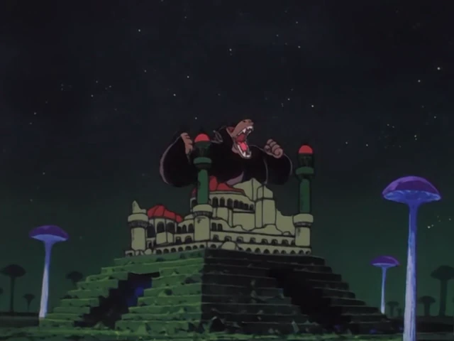
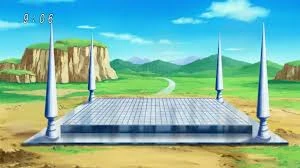

Principais Notícias
Fique ligado nas notícias mais importantes dos últimos tempos.

O RELATO DO MACACO GIGANTE QUE DESTRUIU UM CASTELO À NOITE.Era uma noite qualquer de setembro, do ano de 749, o nosso querido fundador Gyozura, voltava de seu trabalho nas montanhas, quando de repente, o dragão místico Shenlong, que poucos sequer sabiam de sua existência, apareceu no céu por alguns segundos e logo após desapareceu. Alguns minutos depois, depois de presenciar aquele evento lendário, Gyozura observou um macaco gigante emergindo das profundezas do castelo, soltando um rugido amedrontador e disparos de energia pela boca. Ele correu bravamente para longe do castelo, se salvando heroicamente, na manhã seguinte, ele relata que viu os destroços do que, há algumas horas, fora um castelo, e um grupo de pessoas reunidas, prontas para partir, ele relatou também que observou um menino com um rabo de macaco, o que o deixou muito curioso e o instigou a abandonar sua vidinha patética de antes e se tornar um grande jornalista! Que Homem com H maiúsculo!!
 A CHEGADA DO REI DEMÔNIO.
A CHEGADA DO REI DEMÔNIO.Logo após o fim do 22º torneio de artes marciais, correram boatos de que um dos participantes do torneio havia sido assassinado, este era só uma criança, o monstro que fez isso era um dos lacaios do Rei Demonio: Piccolo Daimaoh. Este havia sido uma ameça há centenas de anos atrás, mas de alguma maneira ele retornou e já estava causando violência e discórdia. O nosso querido fundador pode acompanhar tudo de perto, ele nos disse que Piccolo era implacável e que até o Rei da Terra não pode impedi-lo, mas ele conta que houveram guerreiros que tentaram acabar com a tirania deste Demônio, mas que somente UM pode derrotá-lo, e era aquele menino com o rabo de macaco. O senhor Gyozura tentou registrar esta luta, mas a aura maligna de Piccolo o impedia de avançar mais em direção a luta. Com certeza, foi um momento tenebroso para todos...
 O SURGIMENTO DE ALIENÍGENAS.
O SURGIMENTO DE ALIENÍGENAS.Esse evento foi 5 anos depois da ameaça de Piccolo Daimaoh, onde dois alienígenas chegaram na terra e reduziram uma cidade à cinzas. Nos temos alguns relatos e fotos de sua aparência, onde temos um com mais de 1,80m e outro com aproximadamente 1,60m, sendo o maior careca. Eles usavam o que parecia ser armaduras com uma nave em forma de bola. Eu fui enviado para fazer a cobertura, foi um momento difícil, presenciar um vazio onde tinha tantas pessoas foi angustiante. Logo após uns 8 meses, a cidade e seus moradores estavam de volta! Foi a primeira vez que presenciei algo assim, o editor-chefe diz que foi obra de Kami-Sama, eu não acredito muito nisso, mas não posso explicar como isso pode ter acontecido. Eu descobri também, durante as investigações, outra alien veio a Terra e matou um fazendeiro com um tiro de espingarda que o próprio carregava, não achei nenhuma outra evidência depois.

O TERRÍVEL MONSTRO CELL.O ano era 767, androides atacavam diversas cidades do arquipélago, diversas mortes e catástrofes e então, muitas pessoas começaram a desaparecer, só sobravam suas roupas. Ficou este mistério no ar: O que poderia ter acontecido com elas? Ninguém sabia responder com certeza, então se passou mais alguns dias, durante uma transmissão comum do canal ZTV, um monstro verde de mais de 2 metros invade a transmissão e diz que em 10 dias seu "Torneio" iria se encerrar, e que caso ele vença, ele destruirá a Terra. O caos foi instaurado, todo o planeta entra em pânico, mas o nosso "campeão mundial" Mr.Satan diz que lutará contra esse farsante, eu e todos do jornal sabemos que ele não poderia vencer isso, mesmo ele sendo bem forte, ele não é do nível desse monstro. Chegou o dia, mandamos um dos nossos jornalistas para lá, e ele nos disse tudo o que houve.
Tinham no total 11 pessoas, sendo que 8 delas eram as pessoas que nós ja conheciamos de outros casos que já investigavam e as outras 3 que estavam sem elas. Primeiro foi Mr.Satan, que perdeu quase que imediatamente, depois veio um homem loiro, que lutou bravamente contra o monstro, mas ele desiste da luta e pede para, o que aparentemente era seu filho para a luta, algo que surpreendeu todos lá, mas depois de um tempo de luta aquele Cell criou outros monstrinhos menores que lutavam contra os outros no grupo deles. De repente alguém tenta entrar na luta, para matar Cell, ele é despedaçado por Cell, mas, pelo que nosso reportér disse, ele era um tipo de robô, então de repente, o garoto se enfurece e destrói todos os monstrinhos e derrota Cell. Ele disse que mataria todos e inchou, o homem loiro se despediu de todos e sumiu, junto de Cell. Cell volta do absoluto nada e começa a vencer o garoto, quando os dois lançam raios enormes e destroem o cenário ao redor, só sobrando o garoto e os outros de seu grupo. O repórter disse que essa foi a experiência mais assustadora que ele já passou, e que ele torçe para que essas pessoas sempre nos protejam.